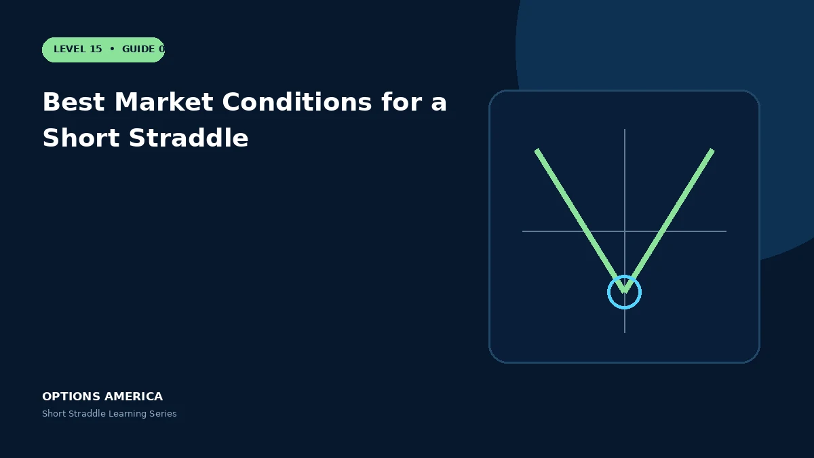

Evaluate implied versus realized volatility, catalysts, liquidity and price stability before considering a short straddle.
Implied versus realized
Compare the market's implied move with a defensible range of realized outcomes. Rich options help only when the premium more than compensates for actual movement and tail risk.
Catalyst calendar
Earnings, court decisions, product news and economic releases can create gaps that bypass gradual adjustments. Decide whether the event premium is intentional or avoid the event.
Liquidity
Use underlyings with tight option markets, reliable multi-leg execution and sufficient open interest. Slippage matters twice at entry and again when adjusting or closing.
Portfolio context
Correlated short-volatility positions can all lose together during a market shock. Review aggregate vega, gamma, delta and buying-power stress before adding another trade.
A practical example
An index has elevated IV without a scheduled binary event and its options imply a wider range than the trader's tested scenarios. The setup is analyzed with strict loss and margin limits.
This simplified scenario focuses on expiration outcomes; live prices and risks will differ. Live option prices also reflect the underlying price, time decay, rates, dividends, liquidity and transaction costs. Greeks are theoretical estimates, not guarantees.
Build a risk-first trading plan
Before using best market conditions for a short straddle, record the underlying price, strike, expiration, total credit and contract multiplier. Calculate both expiration breakevens, then model losses beyond them rather than stopping at the profitable range. The maximum credit is visible at entry, but the largest future loss is not.
Stress at least five underlying prices, a volatility increase and decrease, and several dates. Include a gap that cannot be adjusted intraday. Review delta, gamma, theta and vega at the position and portfolio level because several neutral premium trades can become directional together.
Define a profit target, maximum tolerated loss, margin reserve, event rule and latest exit date. Use a single multi-leg order where possible and verify both legs after every fill or adjustment. This process does not eliminate risk, but it makes the decision measurable and repeatable.
After the trade, record actual movement, volatility change, slippage and the largest directional exposure. Comparing those results with the original forecast helps separate sound execution from a lucky outcome and improves future duration, strike and position-size decisions.
Frequently asked questions
Is high IV enough?
No.
Why avoid some events?
Gaps can create losses before an adjustment is possible.
Does diversification remove tail risk?
No, especially when positions are correlated.
Continue the Short Straddle cluster
Explore related guides: Implied Volatility and the Short Straddle · Short Straddle Margin and Buying Power · How a Short Straddle Works. For a structured sequence, use the free Level 15 – Short Straddle course.
Options involve risk and are not suitable for every investor. This material is educational and is not investment, tax or legal advice. Greeks are theoretical estimates, and contract terms and broker requirements can vary.